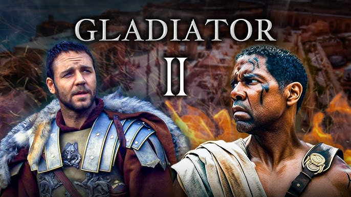
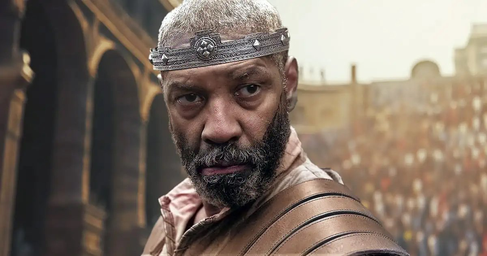

Sejarah Film Holywood
Hari ini, Hollywood amat berkaitan dengan prestis dan produksi film dengan
dana mencapai miliaran Dolar AS. Namun jauh sebelum itu, Hollywood menyimpan
sejarah yang amat panjang. Kembali ke tahun 1880-an, Hollywood, yang masih
bernama Cahuenga, merupakan daerah komunitas agrikultur yang sukses. Perubahan
nama menjadi Hollywood ini diketahui berangkat
dari keinginan istri dari pengusaha properti terkenal di daerah tersebut.
Daeida, yang merupakan istri dari Harvey Henderson Wilcox, seorang pengusaha properti
sukses, mendengar istilah Hollywood ketika seorang perempuan asal Ohio menyebutkan daerah
asalnya dengan nama Hollywood.
Menyukai istilah tersebut, Daeida pun mengusulkan perubahan nama di daerah Cahuenga menjadi
Hollywood.
Kemudian, pada tanggal 1 Februari 1887, Wilcox menyerahkan sebuah dokumen tentang pengusulan kota
baru. Dokumen tersebut merupakan dokumen pertama yang menuliskan nama Hollywood sebagai sebuah kota
secara resmi.
Di awal tahun 1900-an, Hollywood tiba-tiba kedatangan para pembuat film independen asal New Jersey.
Alasan hijrahnya para pembuat film tersebut adalah lantaran adanya aturan ketat yang dikeluarkan
oleh
Thomas Edison, seorang pemilik paten pembuatan film di daerah New Jersey. Ingin kabur dari aturan
yang
menyulitkan tentang paten,
para pembuat film tersebut pun memilih Los Angeles, tepatnya di Hollywood, sebagai pelariannya.
Gladiator II

Gladiator II adalah film laga sejarah epik yang akan
datang yang disutradarai dan diproduksi bersama oleh Ridley Scott.
Berfungsi sebagai sekuel Gladiator (2000), film ini ditulis oleh David Scarpa,
dari sebuah cerita yang ia tulis dengan Peter Craig,
dan dibintangi oleh Paul Mescal, Pedro Pascal, Connie Nielsen, dan Denzel Washington.
Nielsen dan Derek Jacobi mengulangi peran mereka dari film pertama
Film ini diproduksi oleh Scott Free Productions bekerja sama dengan
Red Wagon Entertainment dan Parkes+MacDonald Image Nation untuk Paramount Pictures.
Cerita ini mengikuti Lucius, mantan pewaris Kekaisaran Romawi, yang menjadi gladiator setelah
rumahnya diserbu oleh tentara Romawi,
yang dipimpin oleh Jenderal Marcus Acacius, selama pemerintahan kaisar bersama Caracalla dan Geta.
Sekuel Gladiator telah dibahas sejak Juni 2001, dengan David Franzoni dan
John Logan ditetapkan untuk kembali sebagai penulis skenario.
Tokoh Film Gladiator II
paul Mescal

Jika bicara soal fisik, maka aktor Paul Mescal sempat mengeluhkan soal bentuk hidungnya yang
dianggapnya sedikit aneh. Namun siapa sangka jika hal yang dikira kekurangannya itu malah
membawa
hoki dan cuan di dalam kariernya.
Gegara bentuk hidungnya itu, ia berhasil mendapatkan peran penting di film Gladiator II dan
bekerjasama dengan Ridley Scott. Hal itu diungkapkannya dalam wawancara bersama Vanity Fair.
Denzel Washington

“Denzel adalah pedagang senjata yang memasok makanan untuk tentara di Eropa, memasok
anggur dan minyak, membuat baja, membuat tombak, senjata, meriam, dan ketapel. Jadi dia
orang yang sangat kaya. Alih-alih memiliki kandang kuda pacu, dia memiliki kandang
gladiator,” kata Scott kepada Vanity Fair tentang Macrinus. “Dia tampan. Dia mengendarai
Ferrari emas. Saya memberinya kereta perang berlapis emas.”